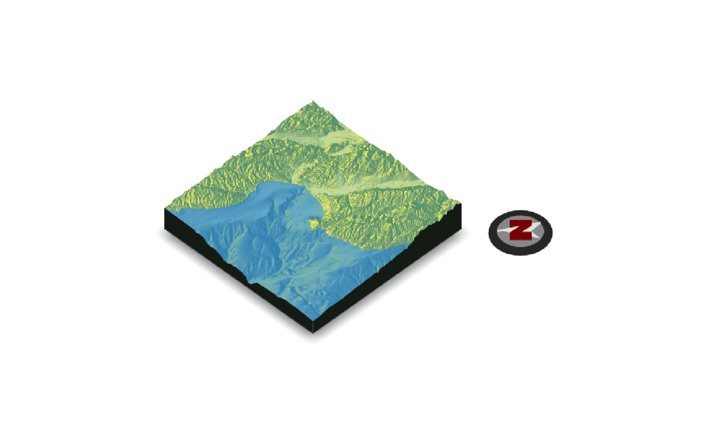
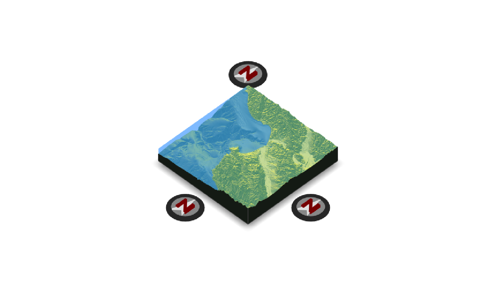
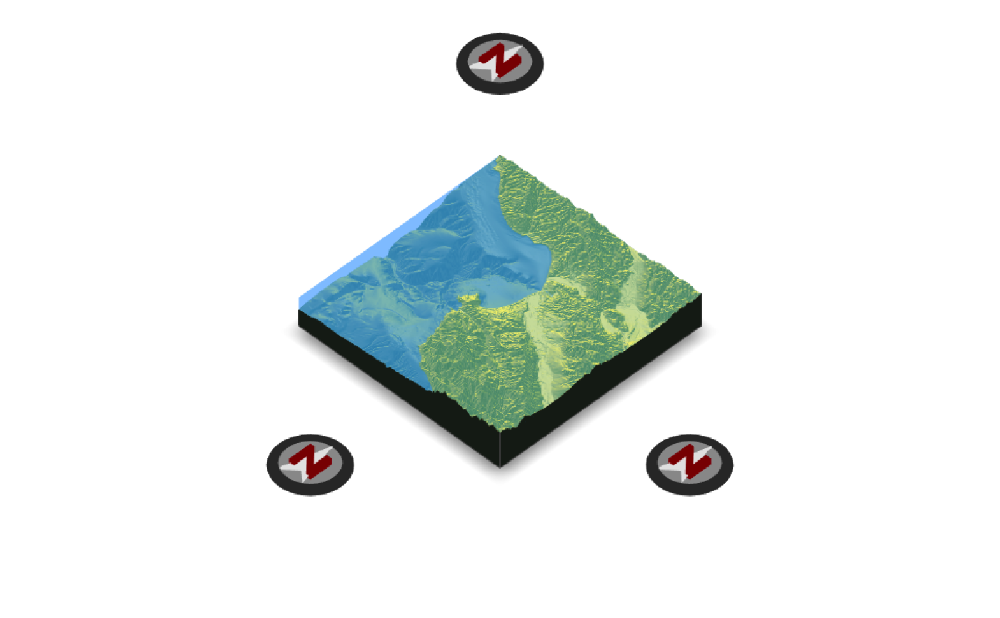
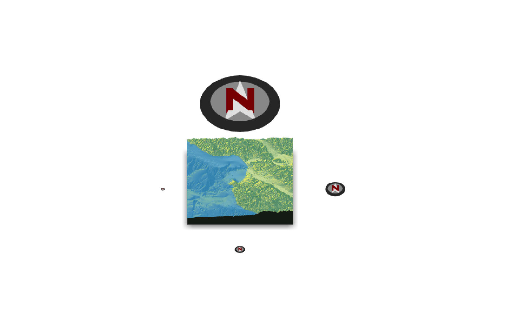
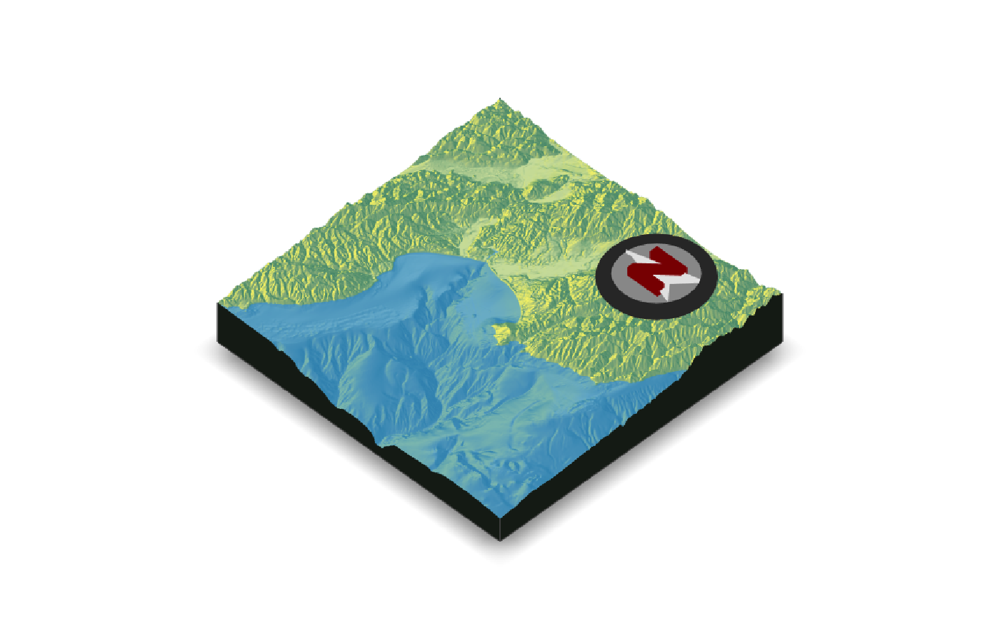
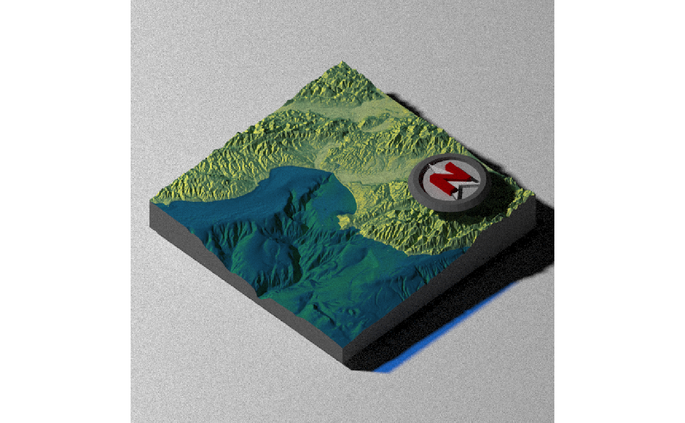
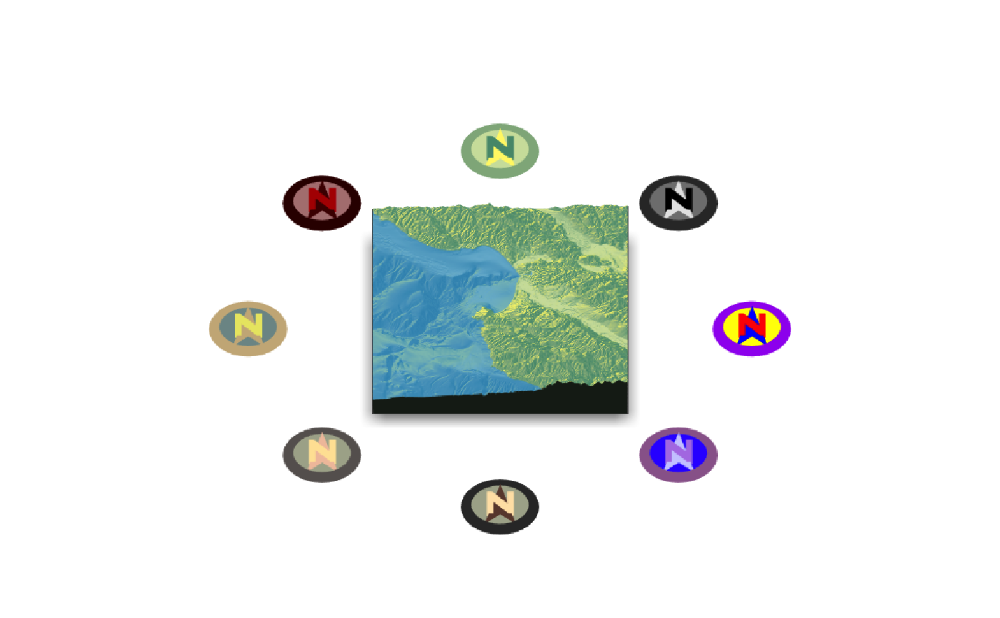

Places a compass on the map to specify the North direction.
render_compass( angle = 0, position = "SE", x = NULL, y = NULL, z = NULL, compass_radius = NULL, scale_distance = 1, color_n = "darkred", color_arrow = "grey90", color_background = "grey60", color_bevel = "grey20", position_circular = FALSE, clear_compass = FALSE )
| angle | Default `0`. The direction the arrow should be facing. |
|---|---|
| position | Default `SE`. A string representing a cardinal direction. Ignored if `x`, `y`, and `z` are manually specified. |
| x | Default `NULL`. X position. If not entered, automatically calculated using `position` argument. |
| y | Default `NULL`. Y position. If not entered, automatically calculated using `position` argument. |
| z | Default `NULL`. Z position. If not entered, automatically calculated using `position` argument. |
| compass_radius | Default `NULL`. The radius of the compass. If not entered, automatically calculated. Increase or decrease the size of the compass. |
| scale_distance | Default `1`. Multiplier that moves the compass away from the center of the map. |
| color_n | Default `darkred`. Color of the letter N. |
| color_arrow | Default `grey90`. Color of the arrow. |
| color_background | Default `grey20`. Color of the area right under the arrow. |
| color_bevel | Default `grey20`. Color of the bevel. |
| position_circular | Default `FALSE`. If `TRUE`, will place compass at a constant radius away from the map, as opposed to directly next to it. Overridden if user manually specifies position. |
| clear_compass | Default `FALSE`. Clears the compass symbol(s) on the map. |
Adds compass to map. No return value.
#Add a North arrow to the map, by default in the bottom right (SE) # \dontrun{ montereybay %>% sphere_shade() %>% plot_3d(montereybay,theta=-45, water=TRUE)#>render_compass() render_snapshot()#Remove the existing symbol with `clear_compass = TRUE` render_compass(clear_compass = TRUE) #Point the N towards the light, at 315 degrees: render_compass(angle = 315) render_snapshot()render_compass(clear_compass = TRUE) #We can change the position by specifying a direction (here are three): render_camera(theta=45,phi=45) render_compass(position = "NW") render_compass(position = "E") render_compass(position = "S") render_snapshot()render_compass(clear_compass = TRUE) #We can also change the distance away from the edge by setting the `scale_distance` argument. render_compass(position = "NW", scale_distance = 1.4) render_compass(position = "E", scale_distance = 1.4) render_compass(position = "S", scale_distance = 1.4) #Zoom in slightly: render_camera(theta=45,phi=45,zoom=0.7) render_snapshot()render_compass(clear_compass = TRUE) #We can also specify the radius directly with `compass_radius`: render_camera(theta=0,phi=45,zoom=1) render_compass(position = "N", scale_distance = 1.5, compass_radius=200) render_compass(position = "E", scale_distance = 1.4, compass_radius=50) render_compass(position = "S", scale_distance = 1.3, compass_radius=25) render_compass(position = "W", scale_distance = 1.2, compass_radius=10) render_snapshot()render_compass(clear_compass = TRUE) #We can also adjust the position manually, be specifying all x, y and z arguments. render_camera(theta=-45,phi=45,zoom=0.9) render_compass(x = 150, y = 50, z = 150) render_snapshot()render_compass(clear_compass = TRUE) #We can change the colors in the compass, and also set it a constant distance away with #`position_circular = TRUE`: render_camera(theta=0,phi=45,zoom=0.75) render_compass(position = "N", color_n = "#55967a", color_arrow = "#fff673", color_background = "#cfe0a9", color_bevel = "#8fb28a", position_circular = TRUE) render_compass(position = "NE", color_n = "black", color_arrow = "grey90", color_background = "grey50", color_bevel = "grey20", position_circular = TRUE) render_compass(position = "E", color_n = "red", color_arrow = "blue", color_background = "yellow", color_bevel = "purple", position_circular = TRUE) render_compass(position = "SE", color_n = c(0.7,0.5,0.9), color_arrow = c(0.8,0.8,1), color_background = c(0.2,0.2,1), color_bevel = c(0.6,0.4,0.6), position_circular = TRUE) render_compass(position = "S", color_n = "#ffe3b3", color_arrow = "#6a463a", color_background = "#abaf98", color_bevel = "grey20", position_circular = TRUE) render_compass(position = "SW", color_n = "#ffe3a3", color_arrow = "#f1c3a9", color_background = "#abaf98", color_bevel = "#66615e", position_circular = TRUE) render_compass(position = "W", color_n = "#e9e671", color_arrow = "#cbb387", color_background = "#7c9695", color_bevel = "#cbb387", position_circular = TRUE) render_compass(position = "NW", color_n = c(0.7,0,0), color_arrow = c(0.3,0,0), color_background = c(0.7,0.5,0.5), color_bevel = c(0.2,0,0), position_circular = TRUE) render_snapshot(clear=TRUE)# }